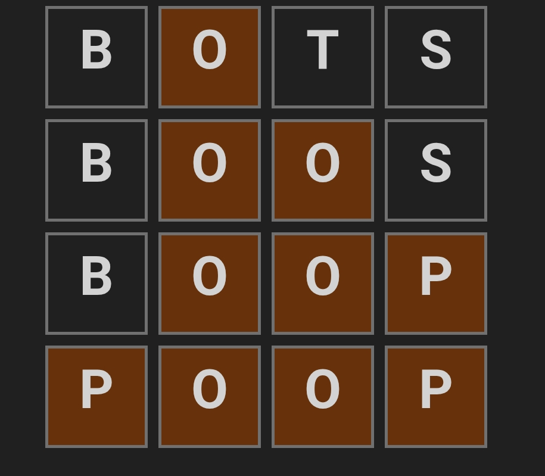
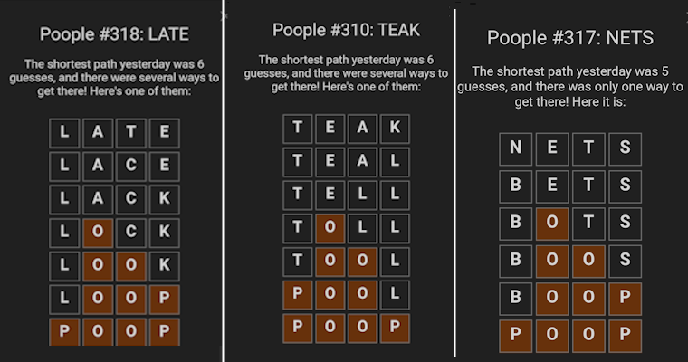

Solving Poople Using Python
A serious-ish post about solving a silly word game
Simulations
Python
Games
Peter Licari ![]()

“Have you played Poople?”, my coworker asked me.
“Poople?” I asked quizzically, wondering if the heavy-metal induced hearing loss had finally kicked in.
“Yeah, Poople!” my other coworker (and my first coworker’s husband) enthused. “It’s great, you’ve got to try it!”
And, dear friends, I did try it. And it is indeed great. So great that it inspired this post: a 4 hour, ADHD-fueled quest to code-up a program that can solve it. In so doing, I learned that nearly 98% of roads1 lead to “poop.” And that’s not just a joke about my state’s poor infrastructure—waka waka.
What is Poople?
Poople is a word game where you’re given a 4 letter word and you have to iteratively transform that word into the word “poop” by changing one letter in-place per turn, with each change creating a still-valid English word. Today’s puzzle2, for example, is “Suck”. My solution was:
- Suck
- Luck
- Lock
- Look
- Loop
- Poop
Today, I happened to get it in the fewest possible steps3. Most of the time, I’m off the optimum by a move or two. But Poople will only tell you how far off the optimum you are; it doesn’t give you an example of a shortest-route. It makes you wait until the next day’s puzzle to know the current day’s solution. This is, almost certainly, to prevent folks from cheating. But I’m very impatient! I want to be able to try my best and then check my answer while my thinking is still fresh!
“How hard would be to make a solver so I don’t have to wait a day.” I wondered.
Turns out, not terribly hard thanks to my eclectic YouTube watch history!
Calculating Route…
Just a few days earlier, I watched this Veritasium video on Dijkstra’s shortest route algorithm. It’s an excellent watch and really illustrates the logic and the performance of the algorithm beautifully; I actually felt like I understood what was happening as it was being explained. Which, you know, is not my typical experience when learning about algorithms for the first time.
For those who don’t know4, Dijkstra’s algorithm is frequently used to calculate the shortest route between two points in a network when the distance between points aren’t all identical. Most of us encounter this in our everyday lives when we use our phone’s GPS to route us to a place we haven’t been to before5. There isn’t usually just one way to get from point A to point B—there are highways, cross-roads, side-streets—and a dizzying number of ways to combine them to get to where we’re going. Dijkstra’s algorithm constructs, in a wonderfully simple way, the shortest route even with all those alternatives present.
Apparently that video really stuck with me, because I realized that what Poople players are doing is really no different than trying to navigate from one place to another—except instead of roads, it’s words. Just like how I4 connects to the Florida Turnpike6, “Lock” connects to “Look” by just changing their third letter. But “Lock” also connects to words like “Lick”, “Luck”, “Lack”, “Mock”, “Sock”, and “Cock”7. One of them (Luck) would be bad because then I’d be going backwards. Another one of them, clearly, would be just as funny to arrive at as “poop”—but that diversion won’t be helpful if our aim is to minimize our route. So just as we have to avoid going down errant cross-streets, we have to try and find an optimal track through words.
In order to do that, we’ll need to identify all the links that exist between all of English’s 4 letter words. Once we do that, we’ll be able to use a slightly modified version of Dijkstra’s algorithm to figure out the minimum distance each of those words have to “poop”. Once we have that, we’ll be able to backtrace the route to get there.
Monkeys Flinging Poop at a Typewriter
There are 26 letters in English. In theory, that means that there are 26^4 different combinations of letters—or 456,976. Fortunately for my computer (which was looking at that number with a lot of trepidation), for every “poop”, there’s about a hundred “xccz”s. Seriously. There’s literally a hundred times the number of the gibberish letter permutations than there are valid English 4 letter words. Which, depending on your source, numbers somewhere between about 4,000–6,0008.
So let’s go ahead and pull an Eminem and read-in a dictionary. I’m going to use the most recent North American scrabble dictionary at time of writing (NSWL2023)—which I happened to find in a handy txt file. (Thanks, Internet!) This has about 196,000 entries, but only 4,218 of which are 4 letters long. The txt file contains definitions, which are extraneous for our current purposes9. But, fortunately, the words are always first and followed by a space—so it can be extracted with some handy-dandy regex.
import re
with open("C:/Users/prlic/Downloads/NSWL2023.txt","r") as f:
lines = f.readlines()
scrabble_words = []
for l in range(len(lines)):
extracted_word = re.search(r'[A-Z]+(?=\s)',lines[l]).group(0)
scrabble_words.append(extracted_word)
four_letter = [w for w in scrabble_words if len(w)==4] Now we make my computer suffer. We’ll go through each of those 4,218 words and create a list of all of the other 4,218 words which are the same except for 1 letter. Fortunately, Python treats the subparts of a string as strings in and of themselves. So it’s pretty easy to blow-apart a word and test to see if they differ by only 1 letter in 1 position:
def test_adjacency(w1,w2):
comparison_array = []
for i in [0,1,2,3]:
# Check every letter in order to see if they match
comparison_array.append(w1[i] == w2[i])
if sum(comparison_array) == 3: #If three match, then they connect!
return True
else:
return Falseadjacency_dictionary = {}
for w in four_letter:
# Going through every word out of the 4,000ish...
adjacent_words = []
for w2 in four_letter:
if w == w2: # Skip over the same word
pass
elif test_adjacency(w,w2):
adjacent_words.append(w2) # adding every adjacent word to the list.
else:
pass
adjacency_dictionary[w] = adjacent_words # Adding the full list to the dictionary for the word in the loop. Let’s see how many words are adjacent to “POOP”!
adjacency_dictionary['POOP']['COOP',
'GOOP',
'HOOP',
'LOOP',
'PLOP',
'POMP',
'POOD',
'POOF',
'POOH',
'POOL',
'POON',
'POOR',
'POOS',
'PROP']That’s quite a lot! And then we can go even further still and map out the words that are adjacent to those, and the ones adjacent to those, on and on, until we either run out of words or out of connections. Which is where that YouTube video of Dijkstra’s algorithm comes in. If we tilt our head and squint, we realize that our adjancency dictionary is a (rough) way of writing out a network. And if it’s a network, than we can use Dijkstra’s algorithm to traverse it in the shortest number of steps. And, helpfully, we always know where we’re trying to go!
Coming Out Clean on the Other Side10
Now that we have our adjacency information, we could make a function that encodes Dijkstra’s algorithm from an arbitrary start word to “poop” and call it a day. But that’s not only no fun11, it’s also inefficient. 4,000 words is short enough that we could simply compute the shortest route to each word once, save that info, and then look it up later. Basically: pre-compile and cache rather than waste compute multiple times later. And this way is especially more efficient once we remember that Dijkstra’s algorithm already gives us the shortest route to every node in the network as a matter of course—we just don’t stop running it until all the possible connections have been mapped.
To see what I mean, let’s look at the pseudocode for Dijkstra’s algorithm, adapted from the algorithm’s Wikipedia page:
function Dijkstra(Graph, first_point, target):
dist <- []
prev <- []
for each vertex v in Graph.vertices:
dist[v] <- inf
prev[v] <- NULL
Q.append(v)
dist[first_point] <- 0
while Q is not empty:
u <- v in Q with min(dist[u])
Q.pop(u)
if u = target:
Q = []
for each edge (u,v) in Graph:
alt <- dist[u] + Graph.Distance(u,v)
if alt < dist[v]:
dist[v] <- alt
prev[v] <- u
return dist[], prev[]To translate into English: collect all of the vertices in the graph and initialize their values to be infinity (except for the first point, which is 0). Then, go through each connection beginning from the first point, and check if the distance to that point is less than the recorded distance. If it is, replace the distance and note the previous node. Rinse and repeat until you get to the target.
The only reason the algorithm terminates once the target is found is because we specify what the target is. Indeed, in Wiki’s psuedocode, that step isn’t even in there! So we can continue onwards until we’ve got everything that can be got.
There are a few changes that we can do here for the current problem. First off, Dijkstra’s algorithm was intended for graphs of non-uniform weights—where the distances between two points can vary. That’s not the case here. All the distances are 1 since each adjacent word is, by definition, only 1 letter off12. Second, is the fact that I don’t have an end-point in mind, so I’m going to need another way for the procedure to stop. Finally, I’m not sure of the structure of the graph: there may be cases of 4 letter words that are disconnected from the main structure. To see what I mean, look at the graph below:
Nodes {A,B,C} can’t ever be reached by any of {J,I,E,D,F,G}. That is, there may be some words that “Poop”, alas, will never be able to connect to. If we assume that Graph.Distance in the pseudocode returns inf when the nodes are unconnected then this will work eventually—but it’s a tad inefficient. But, I mean, it’s pseudocode: it’s not meant to be the exact implementation of the word graph search. We’ll do better.
The next section is the exact implementation of the word graph search—with ample details for those who want to follow along! For those who don’t, you can feel free to skip on ahead to the section where I demonstrate the solver.
The Exact Implementation of the Word Graph Search
This is one of those things where it helps to begin with how you want to end.
What we want to be able to do is select any word in our list and not only know how many steps it takes to get there but what steps, specifically it takes to get there. Our first guess may be to record, for each word, the exact distance and the path it takes to get there. This is sub-optimal for a couple of reasons:
- There may be multiple valid paths of the same length.
- It will take a lot of time (relatively) 4,000 or so unique paths.
First, let’s remember that the minimum distance from any word \rightarrow POOP is the same as the minimum distance from POOP \rightarrow that word. So we start our graph search with the word we know we’re always going to end with.
Once we do that, we can figure out that we actually don’t need to need to record the full path for each word To quote AA: “You just need to take the next right step.” More accurately, you just need to know what the right previous step was.
If our word is POLL, then we just need to know that POOL is the right previous word when starting from POOP. So, in POLL’s entry, we don’t need to record [‘POOL’,‘POOP’], we just need to record [‘POOL’]. Once we know that we need to go to [‘POOL’], we can then look up POOL’s best previous word, which happens to be our starting point. This way, you can iteratively construct the path between POOP and any arbitrary starting point quickly without needless pre-calculation13.
Alright, all that’s to say, we’ll need to store the distance for the word and the immediately previous word from POOP to it. POOP has no parent word and the distance to itself is 0. Let’s set that up.
all_words = adjacency_dictionary.keys()
poop_distances = {w:{'distance': None, 'previous': []} for w in all_words}
poop_distances['POOP']['distance'] = 0Next, let’s think through how we’ll get to each word to calculate the distances. We’ll start by going to the words that immediately neighbor POOP. These will all be given a weight of 1 because it takes 1 turn to get to them. For each, we’ll record that POOP is the previous word.
Next, we’ll go to all of the words that are reachable by all of the level 1 words. From this level onward, we’ll start seeing duplicates—both in words of this level and to words seen in previous levels. The first type of duplicate can be dealt with by only considering the full set of unique words in that level. The second can be dealth with by keeping a running list of every word we’ve visited thusfar. If we’ve already seen a word at a previous level we know (by dint of it being a previous level) that we’ve already found the shortest path to it; this new route can be disregarded.
visited = []If we haven’t seen a word before, we go to its entry in our poop_distances dictionary and note what level it is; that’s its distance from POOP. We’ll then pop its parent word(s) into the list of previous words. Rinse and repeat until…
Wait, how do we get this ride to stop?
Fortunately, because we’re going level-by-level rather than exploring every path (breadth rather than depth-first), if we come to a situation where every word we’re seeing at this level is one we’ve seen before, that means that we’ve exhausted the search. After all, if we’ve seen every word that means we’ve seen all of their parents—and if we’ve seen all of their parents that means we’ve seen all of the parents’ adjacencies.
So, our steps, in sum:
- Check our current level (the number of moves away from POOP)
- Identify all of the words adjacent to all the words on the current level.
- Remove any words that are duplicates of any other on this level or that have already been visited.
- If removing words that have already been visited leaves us with 0 words, quit-out. We’re done.
- Put every new, unique word here into the list of already-visited words.
- For every new, unique word (W), go to the
poop_distancesdictionary and record the current level as the distance. - Record every word that (W) is adjacent to that are also within the current level’s list of words as the parents.
- Increment the level.
Rinse and repeat until we quit out as noted at step 4.
I don’t get many chances to work with recursive functions in my day-to-day so I thought it’d be fun to code it up that way—especially because I don’t expect the number of recursive steps to explode or anything. I’d be shocked if this took more than 100. You could also do this as a for or while loop, though, to avoid any chance of Python getting snippy with you.
def calculate_distances(current_level_words, current_distance):
print(f"Level {current_distance} reached")
# Initializing
# Current distance is fed in via `current_distance` (step 1)
all_current_level_children = []
current_level_adjacency_dict = {}
for cw in current_level_words:
all_current_level_children = all_current_level_children + adjacency_dictionary[cw] # identifying all of the children of all of the current level's words (step 2)
current_level_adjacency_dict[cw] = adjacency_dictionary[cw] # Creating a per-level adjacency dictionary to help with a later step.
all_unique_children = list(set(all_current_level_children))
new_visits = [child for child in all_unique_children if child not in visited] # First get all the unique children. Then only those that have not been visited (step 3)
if len(new_visits) == 0:
return None # If there aren't any new words we're done (step 4)
for v in new_visits:
visited.append(v) # Pop each new unique word into the visited list (step 5)
poop_distances[v]['distance'] = current_distance # Note the current distance (step 6)
for prev in [w for w in current_level_adjacency_dict.keys() if v in current_level_adjacency_dict[w]]:
poop_distances[v]['previous'].append(prev)
# Adding only the adjacencies that are within the current level as "previous" nodes (step 7)
calculate_distances(new_visits, current_distance + 1) # Increment (step 8) The fact that it's recursive handles the rinse-and-repeat.Ok, so, technically this isn’t Dijkstra’s algorithm anymore. Remember how I said his innovation was to solve for instances where nodes have differing weights? The fact that they don’t here—but instead all have a weight of 1—means that this decomposes into breadth-first search. But, hey, that’s how inspiration works sometimes! You start off somewhere, tweak it a bit, wind up somewhere new…except “new” only means “new” if this were the 1950s. But, hey, it’s new to me!
Alright, let’s start off at our initial parent word (POOP) and the level (1).
calculate_distances(['POOP'],1)Level 1 reached
Level 2 reached
Level 3 reached
Level 4 reached
Level 5 reached
Level 6 reached
Level 7 reached
Level 8 reached
Level 9 reached
Level 10 reached
Level 11 reached
Level 12 reached
Level 13 reached
Level 14 reached14 levels! I wonder how many words have zero route to POOP at all.
len([word for word in poop_distances.keys() if poop_distances[word]['distance'] is None])98Nearly 100 words! That’s a lot, but it’s only 2% of English 4 letter words. It’s a good thing that I thought ahead with disconnected graphs. Thanks, Past Peter!14
The POOPLE Solver In Action
And now we’re ready to see how well to the actual Poople solver works! Those who read the previous section should (hopefully) have an appreciation for how we went from a list of English 4 letter words to a bit of code that can solve a random browser game about poop in about .003 seconds. For those who didn’t read through, you didn’t miss all that much: just some Python code, an air-tight solution to peace in the middle east, and the last digit of \pi15. The Python code returned a dictionary of about 4,000 words that tells us:
- How many steps it takes to get to that word from “POOP” (or has
Noneif it’s not possible) - What the previous word(s) were that would permit you to get to that particular word in that number of sets.
So, using the word “RUNS” as an example:
poop_distances['RUNS']{'distance': 4, 'previous': ['PUNS']}Which let’s us do
poop_distances['PUNS']{'distance': 3, 'previous': ['PONS']}And then “PONS” -> “POOS” -> “POOP”!
The function below will just loop through that process for us.
import random
def optimal_path(word):
word_list = []
if poop_distances[word]['distance'] is None:
print(f'There is no path from POOP to {word}!')
return None
past_word = word
while 'POOP' not in word_list:
word_list.append(past_word)
# Sometimes multiple words can funnel into each other. This just selects one from the options available.
past_word = random.sample(poop_distances[past_word]['previous'], k = 1)[0]
print(f'POOP has been reached in {len(word_list)-1}!')
word_list.reverse() # Making it pretty to see the path
print("->".join(word_list))
return Noneoptimal_path('RUNS')POOP has been reached in 4!
POOP->POOS->PONS->PUNS->RUNSWhen I told my siblings about this when we gathered on Father’s day, the consensus was, and I quote: “You huge nerd.” Joke’s on them though—NERD gets to POOP in 6.
optimal_path('NERD')POOP has been reached in 6!
POOP->PLOP->PLOD->PLED->PEED->NEED->NERDTesting the Solver (the Importance of the Right Dictionary)
Let’s go through a couple of days of Poople puzzles to see how well the solver performs.

optimal_path('LATE')
print('----')
optimal_path('TEAK')
print('----')
optimal_path('NETS')POOP has been reached in 5!
POOP->POOS->POTS->PATS->LATS->LATE
----
POOP has been reached in 5!
POOP->POON->PEON->PEAN->PEAK->TEAK
----
POOP has been reached in 4!
POOP->POOS->POTS->PETS->NETSIt seems like the solver actually performs better than Poople’s own logic. And, thanks to my daily Poople playing, I have a good guess as to why. The Scrabble dictionary has substantially more 4-letter words than the Poople’s does.
In fact, this is why I’ve started cooling down on Poople a bit. Not because the game isn’t fun in theory, or because having a solver made it less enjoyable (if anything, comparing myself to the optimum afterwards made it more fun for me!). It was because I started having BEEF16 with the game’s dictionary. There were some omissions I could accept—but you’re going to tell a political scientist and someone who works with computers that BORK isn’t a word! Get the FUCK17 out of here!
So, in my frustration-laden curiosity, I looked to see if I could find Poople’s dictionary in the game’s source code. And, dear reader, I could. Which meant that I could run through the same exercise again pretty trivially and update the solver to use use Poople’s own words.
BEHOLD!
optimal_path_poople_words("VIEW")POOP has been reached in 6!
POOP->PLOP->PLOD->PLED->PIED->VIED->VIEWOk, admittedly, it’s a bit anti-climactic just to put it out like that—that’s because I’ve hidden the dictionary and the code block that generated the function. I want to respect the Poople dev and not broadcast the dictionary for any random reader (or LLM agent) to see. But once you manage to find that, you just have to copy-paste the code above and follow the steps.
If we put it through the same paces we get the same solutions as the game does:
optimal_path_poople_words('LATE')
print('----')
optimal_path_poople_words('TEAK')
print('----')
optimal_path_poople_words('NETS')POOP has been reached in 6!
POOP->POMP->POME->SOME->SAME->SATE->LATE
----
POOP has been reached in 6!
POOP->LOOP->LOOM->LOAM->LEAM->TEAM->TEAK
----
POOP has been reached in 5!
POOP->BOOP->BOOS->BOTS->BETS->NETSWhich I think is nice because it validates that the core logic of the original solver was correct, it just needed the “proper” dictionary.
But it’s not like swapping out the dictionaries are marginal changes! Poople’s dictionary has 2,398 words—nearly about 40% fewer than the Scrabble dictionary! The absences include words immediately proximal to POOP (POOS is a particularly frustrating omission). Poople’s dictionary has 11 words off of POOP by one letter. Scrabble’s has 14. As a result, there are loads of cases where the Scrabble dictionary reaches POOP sooner than the dictionary does the game.
I think that this is a pretty big weakness from a game design perspective: it needlessly punishes the game’s primary audience. Folks who are interested in word games like Poople likely have a larger vocabulary than those who aren’t. That larger vocabulary means that they’ll be much more likely to type in a perfectly acceptable (mayhaps even cromulent) English word that is nonetheless rejected by the game’s dictionary. By analogy, the game is like a foreman who’s hired you to lay a path from one point to another, offering a giant pile of bricks next to the starting point with a sign that says “use us!” But when you pick up about half of them, your employer—without rhyme or reason—goes “ew, gross, not that one—choose another.”
In that way, Poople ceases to be about picking the shortest lexical route to POOP. It’s about trying to create the shortest route the developer has determined without a mechanism to check or course correct. The dictionary is hidden from the average player meaning that they have to guess, in the moment, whether they’re next step will be accepted. And if it’s not—tough 💩. Poople doesn’t offer a way to delete a step or try again without re-opening the game in an icognito window. There’s been many games where I’ve planned a route only to be told “nope! That ain’t a word”—and because there’s no way fix a mistake that isn’t your fault as the player, you’re forced to double-back and increase your path length.
Fortunately, I realized that the game resolves whether the word is in the dictionary prior to resolving whether it’s a letter off. So I’ll think a few words down the line and type in a word that’s 2+ letters off to check that it’s in the dictionary. It works fairly well, but it’s not perfect. I seriously wish that it let you reverse course prior to getting to POOP so that it challenges us to get the very best POOP route. Alas…
Frustrations with the game itself aside, making the solver and writing this post was a lot of fun! But these same friends recently introduced me to Sedecordle. Which is Wordle but solving 16 grids at once in 21 guesses…18
So, yeah…see you guys soon with the optimal Sedecordle openings!
Footnotes
And by “roads” I mean, 4 letter English words.↩︎
June 14th, 2026.↩︎
Some of you are going to be like “duh, Peter, this whole post is about how you made a solver for this game”—but, at the time of writing this footnote, I actually haven’t made the solver yet. This post is more about the journey of making the solver. Like with Poople itself, the destination is (relatively) fixed but the adventure is how we get there. So, yeah, I titled it this way without having actually done the work yet. How’s that for confidence?!↩︎
As if I also didn’t know prior to writing this blog post.↩︎
Or, if you have my poor sense of direction: a place you haven’t visited at least 6 times before.↩︎
In the most cursed fucking interchange in this country, I swear to God.↩︎
I originally had a joke where I said “obviously like the rooster, pervert” but then the very next word I came up with was “lick”—AND, LIKE, HOW COULD I JUDGE?! I WAS BETRAYED BY MY OWN BRAIN. Incidentally, that’s why “lick” is at the front of the list rather than following the order that I thought the words up: to try and hide what my shameful brain did. This secret is between us, dear 5% or so of people who actually read the footnotes.↩︎
Collins Dictionary puts it at 5,600. The scrabble dictionary has about 4,000.↩︎
Though might be useful at the next family game night.↩︎
This subtitle is a reference to the Shawshank Redemption: Andy Dufresne—who crawled through a river of shit and came out clean on the other side.↩︎
You’d think that how (un)fun an implementation is shouldn’t matter whatsoever to whether it’s adopted but, hey, I’m only human.↩︎
Technically, this means the algorithm decomposes into an instance of breadth-first search. But I’m going to keep the Dijkstra implementation for narrative simplicity. This is a blog post, not production code.↩︎
One thing that I hope is clear throughout this is that these sorts of exercises, both in games about poop and more serious applications, is deciding when it’s better to calculate once and store information or when it’s better to set up your data to run a calculation upon request.↩︎
Alas, being in the past, Past Peter will never see this note of appreciation. But since Current Peter will one day be Past Peter to Future Peter, Current Peter accepts the acknowledgement on the Past’s behalf with gratitude.↩︎
Shhh! Maybe that’ll encourage them to go back and read the section.↩︎
POOP in 5 moves.↩︎
Which reaches POOP in 6, if the Scrabble dictionary folks had the GUTS (4) to include it.↩︎
From the perspective of my productivity: “With friends like these, who needs enemies?”↩︎
Reuse
Citation
BibTeX citation:
@online{licari2026,
author = {Licari, Peter},
title = {Solving {Poople} {Using} {Python}},
date = {2026-07-06},
url = {https://www.peterlicari.com/posts/solving_poople_26/},
langid = {en}
}
For attribution, please cite this work as:
Licari, Peter. 2026. “Solving Poople Using Python.” July 6,
2026. https://www.peterlicari.com/posts/solving_poople_26/.